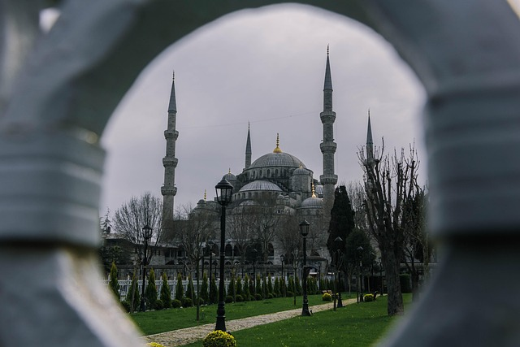

Exploreing Istanbul's Headen gems
Istanbul blends East and West with ancient markets, majestic mosques, and cozy cafes. Our 3-day journey took us through the historic Sultanahmet district and the bustling Grand Bazaar.
Istanbul blends East and West with ancient markets, majestic mosques, and cozy cafes. Our 3-day journey took us through the historic Sultanahmet district and the bustling Grand Bazaar.
We walked through the serene Arashiyama bamboo forest at dawn. The rustling of bamboo leaves felt meditative. Don’t miss the matcha tea houses nearby!

Cox's Bazar is a city, fishing port, tourism center, and district headquarters in southeastern Bangladesh. It is famous mostly for its long natural sandy beach, and it is infamous for the largest refugee camp in the world. It is located 150 km (93 mi) south of the divisional headquarter city of Chittagong.